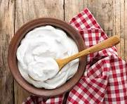

Yogurt

Description
Yogurt is a healthy dairy food made by fermenting milk. It is rich in protein, calcium, and probiotics, which are good for digestion.
Ingredients
- Milk
- Yogurt starter culture
- Sugar or honey (optional)
- Fruits (optional)
Steps
- Boil the milk and let it cool slightly
- Add the yogurt starter and mix well
- Cover and keep it in a warm place
- Let it set for 6–8 hours
Home